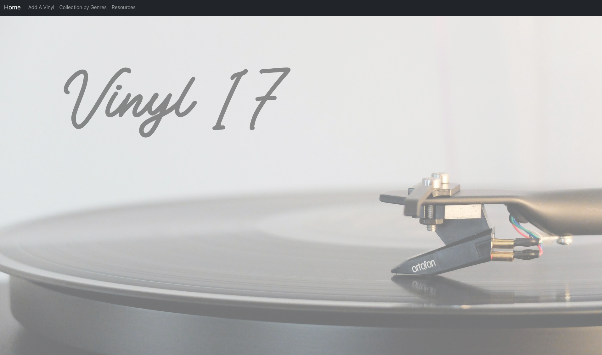

Techical Projects
Vinyl17
GitHub RepositoryRails back-end application with a React front-end that allows a user to keep track of their vinyl collection.
- Used JavaScript and React frontend to communicate with Rails API backend.
- Designed home page background and clean front-end enabling new user accessibility.
- Used Redux middleware to respond to and to modify state change.
CoffeeBeans
GitHub RepositoryRuby on Rails application that allows users to record their coffee brews with various equipment.
- Utilized OmniAuth to allow users to signup, login, logout using Google.
- Employed ActiveRecord associations to have simplified operations between models.
- Displayed error messages describing the validation failures in the views.